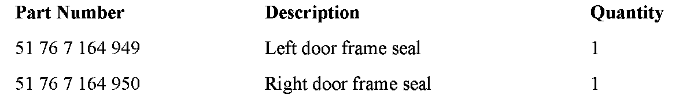
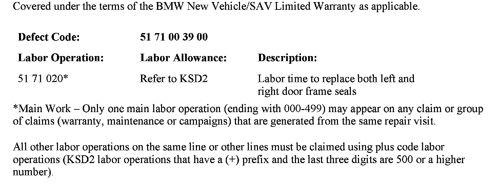
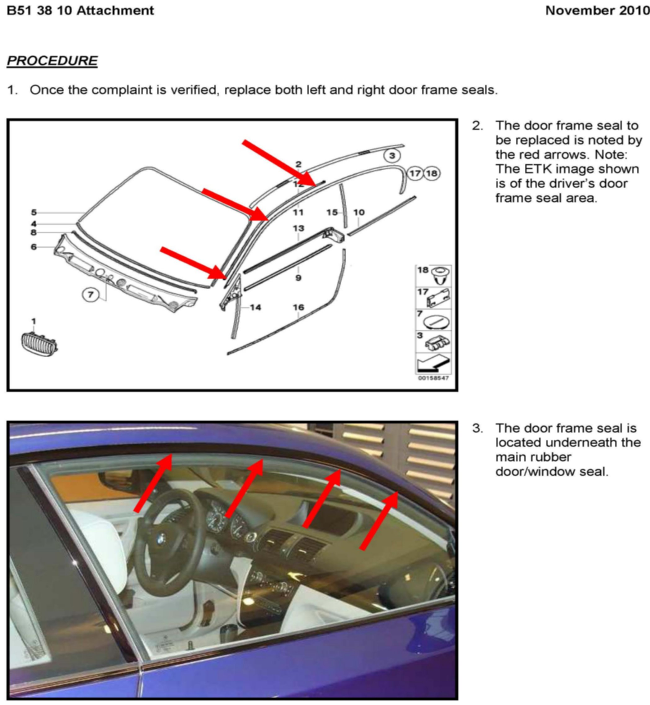
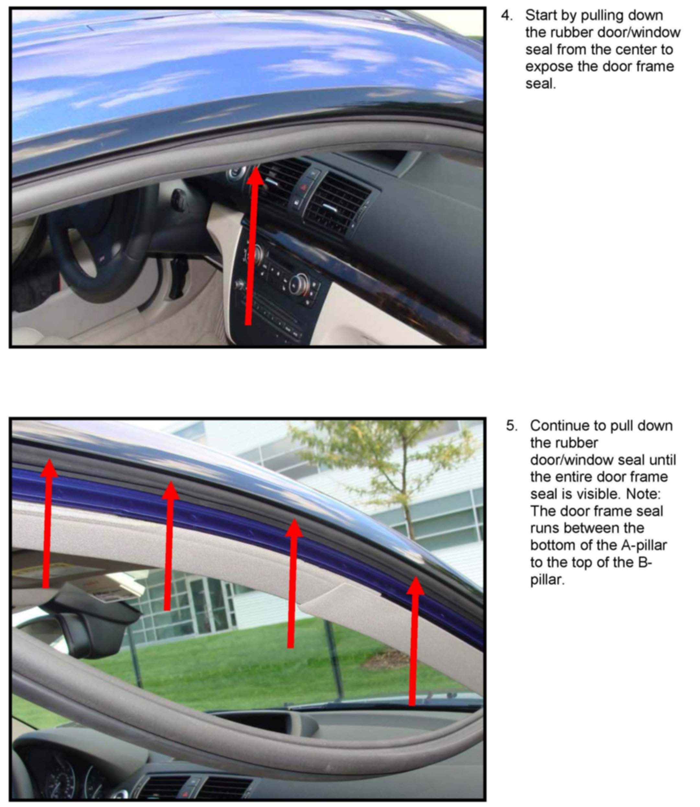
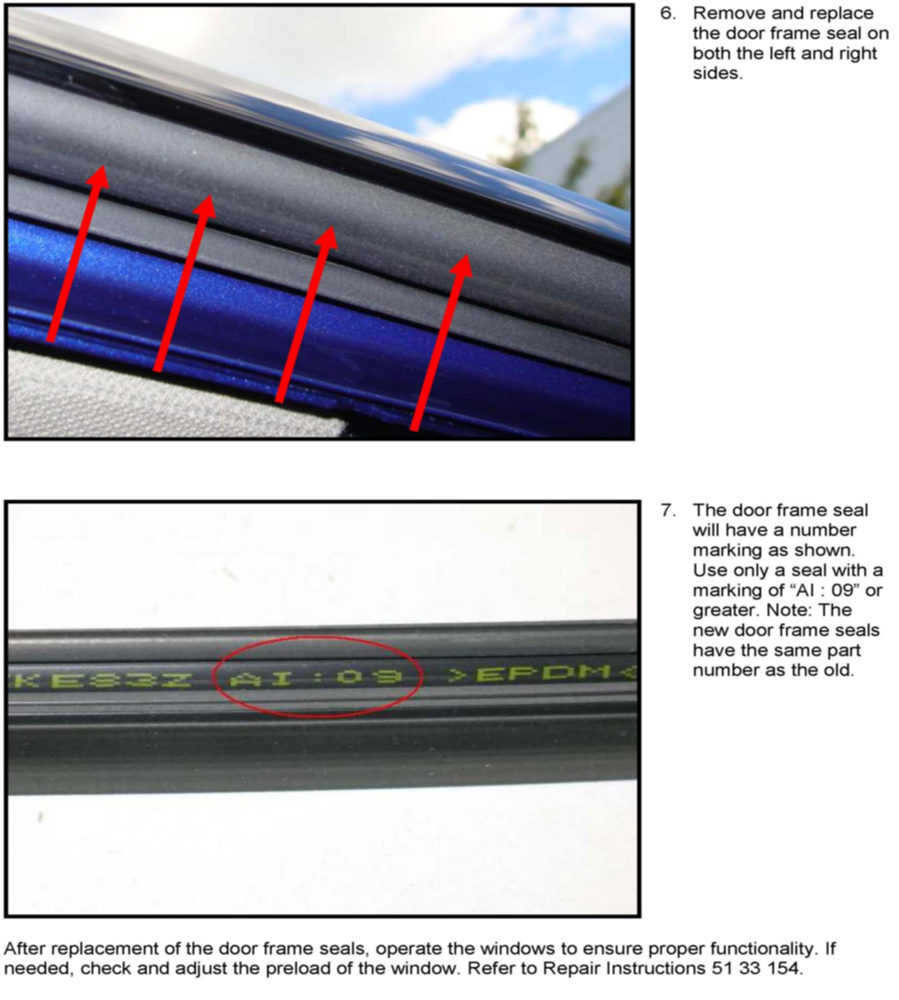

Body - Wind Noise From B-Pillar At High Speeds
SI B51 38 10Body Equipment
November 2010
Technical Service
SUBJECT
Wind Noise from B-pillar Area
MODEL
E82 (1 Series) produced up to July 20, 2010
SITUATION
A wind noise may be heard from the B-pillar area at high speeds
CAUSE
The pressure differentials between the interior and exterior of the vehicle increase as the speed increases. At high speeds, the window may be pulled away from the door/window seal, creating a wind noise at the B-pillar area.
CORRECTION
The door frame seal has been revised to increase the holding force of the window.
PROCEDURE
Refer to the procedure attached to this Service Information bulletin.

PARTS INFORMATION

WARRANTY INFORMATION
ATTACHMENTS



B51 38 10 - Procedure